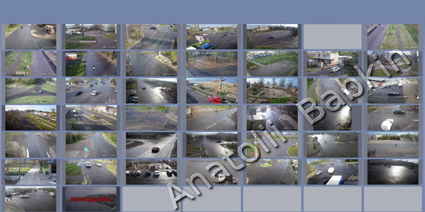

Анатолій Бабкін
Анатолій Бабкін
Планування і модернізація топології мережі. Встановлення та налаштування мережевих вузлів (пристроїв активного мережевого обладнання, персональних комп'ютерів, серверів, засобів комунікацій). Встановлення та налаштування мережевих протоколів, мережевих служб. Пошук несправностей, вузьких місць мережі і підвищення ефективності роботи мережі. Моніторинг мережевих вузлів. Моніторинг мережевого трафіку. Забезпечення захисту даних.
Корпоративна мережа-складна система, що складається з програмних, апаратних і комунікаційних засобів, що забезпечують ефективний розподіл обчислювальних ресурс. Основу роботи мережі складають мережеві служби (або сервіси).
voip_відео

Установка і настройка voip телефонії, архівування телефонних ліній.
Супровід та підтримка апаратно-програмного комплексу відео інформаційної системи
«Нікополь – прозоре місто». Виконкомом Нікопольської міськради були залучені
кошти програми розвитку ООН. У сукупності в місті встановлено 106 камер
відеонагляду, частина з яких транслюється в мережу Інтернет.
Мапа міських камер
Під IP-телефонією мається на увазі набір комунікаційних протоколів, технологій і методів, що забезпечують традиційні для телефонії набір номери, дозвон і двостороннє голосове спілкування, а також відеоспілкування по мережі Інтернет або будь-яким іншим IP-мереж.
С.К.У.Д.
Займався впровадженням системи контролю та управління доступом ( СКУД ) призначеної для вирішення завдань організації та управління фізичним доступом співробітників і відвідувачів на територію і в окремі приміщення об'єкта.